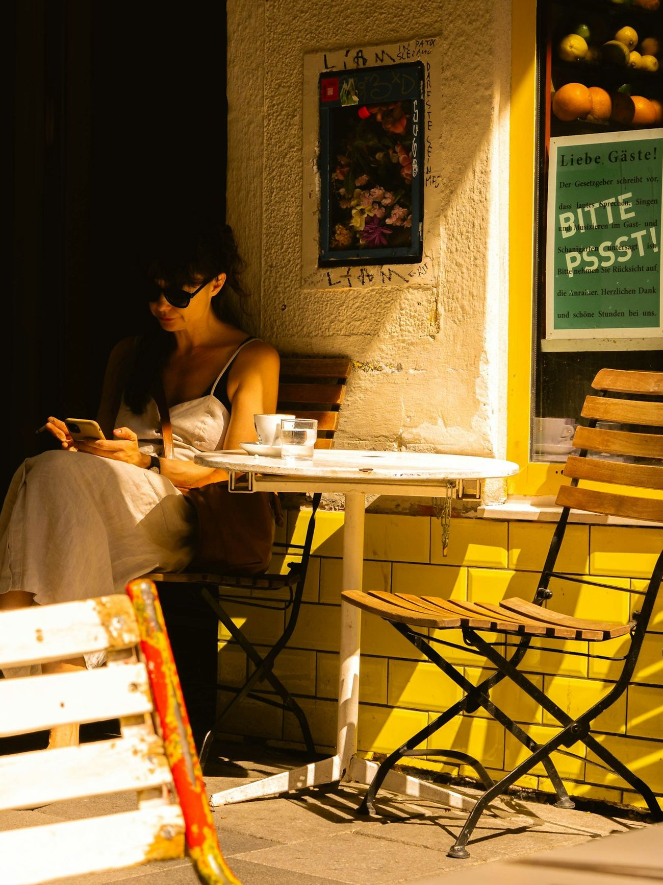

Before private information becomes leverage.
Private conversations, finances and plans can become leverage over you. Toza assesses and hardens your phone, computer and accounts with you, in person.
WhatsApp
In person · With you presentYou control your credentials
Where this usually begins.
Or before anything happens. You don't need a known incident to begin.